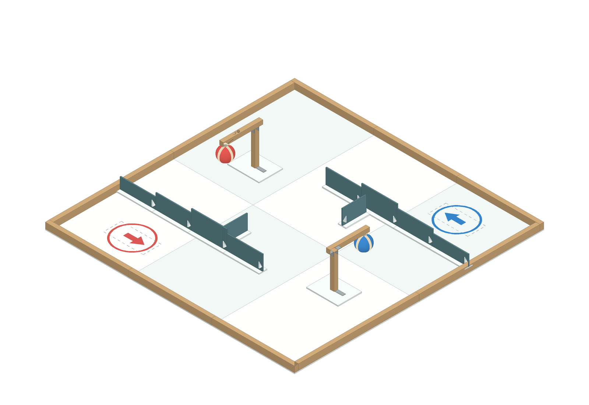
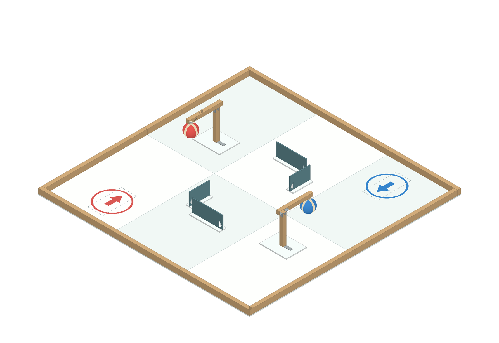

CYBERBRICK 2.0 · 手工制作 · v08 · 2026.10.17
126厘米竞技场
尺寸图、制作说明与3D示意
保留已确认的1260 × 1260 mm单层平地场地；雪弗板＋木条手工制作。红圈出发打红球，蓝圈出发打蓝球。命中后球脱离磁点，降到低位并保留结果，人工复位。
打开 Figma 完整图册打开可旋转3D
从这里开始看
- 平面布局 B：先体验480 mm宽入口，再装回其余墙体验A。
- 裁切与排料：一张1220 × 2440 × 5雪弗板；6块420 × 630底板。
- 墙体装配和球靶详图。
- 采购与制作顺序，图册底部补充精确坐标、钻孔与小五金装配。
Figma 中的文字、尺寸线、贴图与3D轮廓均可编辑。实际打印请使用下面的实尺PDF。
两种布局，同一套材料

A · 10段墙全部安装
B · 拆下6段墙及底脚，保留4段离线3D支持拖动旋转、滚轮缩放、A/B切换、待击/低位切换、俯视和尺寸显示。详细使用说明
制作与打印文件
A3 / A4贴图二选一，100%实际尺寸打印。关闭“适合页面”，先量100 mm校准线。A3已双拼，不要再选“每张两页”。
尺寸状态
已确认：1260场地、单层平地、手工制作、同色攻击和命中结果保留。
设计选值：5厚底板、40宽墙脚、60/80/100墙高、Ø70软球及木架结构。
需要实测：球心135、柱长173仅为示例。制作前测两种攻击的高度、扫掠与净空，再定柱长、磁力和绳路。图纸与数字几何已核查；未完成实机试打。
图册保留了原Figma内容，在同一文件右侧新增独立制作图区。历史v05打印组件不是本次手工制作依据。